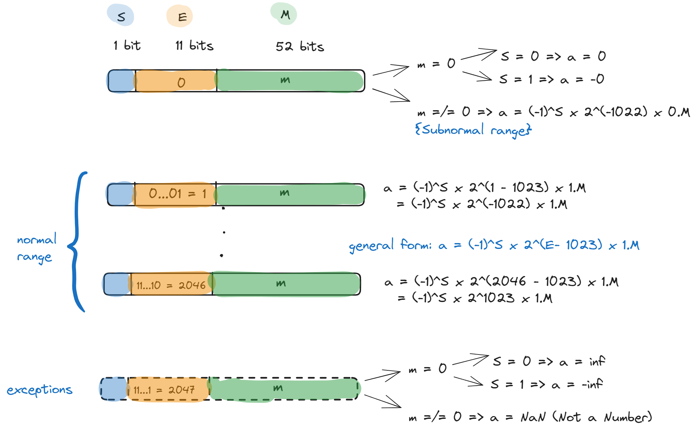

1 Floating Point Numbers
1.1 ANSI/IEEE 64 Bit
Let \(\tilde{a}\) be a 64 bit IEEE floating point number. \(\tilde{a}\) is represented as
S E ... E M ... M Where S is the sign bit, 11 E’s are the exponent bits and 52 M’s are mantissa bits. Interpretation (Case analysis on value of \(E\)):
\(\texttt{E} = 0\,\), i.e. \(\,\tilde{a}\,\) = S | 0 … 0 | M:
- \(M = 0 \Rightarrow \tilde{a} = (-1)^{S} 0\)
- \(M \neq 0 \Rightarrow \tilde{a} = (-1)^S \times 2^{-1022}\times 0.M\) (subnormal range)
\(1 \leq E \leq 2046 \Rightarrow \tilde{a} = (-1)^S \times 2^{E - 1023} \times 1.M\) (normal range)
\(\texttt{E} = 2047\,\), i.e. \(\,\tilde{a}\,\) = S | 1 … 1 | M:
- \(M = 0 \Rightarrow \tilde{a} = (-1)^{S} \texttt{inf}\)
- \(M \neq 0 \Rightarrow \tilde{a} = \texttt{NaN}\text{(Not a Number)}\) (exceptions)
See Figure 1.1 for a visual summary.

Examples:
FP64 stands for IEEE Floating Point 64 bit number representation. Whereas \([\cdot]_{\texttt{FP64}}\) is the FP64 evaluation/interpration of the machine numberrealminis the smallest normalized positive machine number in FP64: \[ [\![\texttt{0|0 ... 01|0 ... 0}]\!]_{FP64} = 2^{1 - 1023} \times 1.0 = 2^{-1022} \]realmaxis the greatest normalized machine number in FP64: \[[\texttt{0|1...10|1...1}]_{\texttt{FP64}} \approx 1.7977\text{E}308\]\(1 = 2^0 \times 1.0 = 2^{1023 - 1023} \times 1.0 = [\texttt{0|01...1|0...0}]_{\texttt{FP64}}\)
epsis defined as the spacing in the interval \((1, 2)\). Note that the spacing is constant for each such interval, but grows as we go further down the number line. That is, the spacing in \((1000, 1001)\) is also constant, but larger.number right after 1 is \([\texttt{0|01...1|0...1}]_{\texttt{FP64}}\). Then the spacing, i.e.
epsin the above definition is \(2^{-52}\)